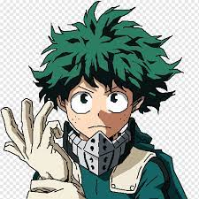

Midoryia
Midoryia é um personagem que eu me identifico por ser timido e ao mesmo tempo determinado ao que acredita ser certo. sempre valoriza quem ta do lado dele, é carinhoso e nunca mede esforços pra ajudar alguem, o sonho dele é ser o maior herói de todos assim como o all might que é o herói em que se espelha.
eu me identifico com ele na Determinação e na timidez, as vezes não consigo me expressar e fico quieto a maior parte do tempo, mas sempre estou atras do que gosto e amo, e em busca sempre de ser melhor a cada dia.